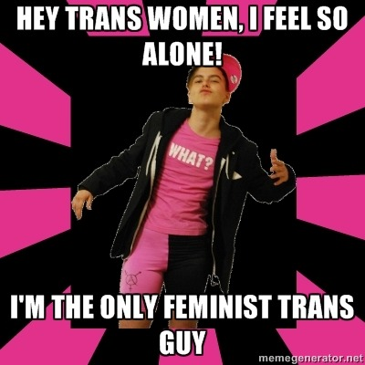

Oppressive trans bro says: Hey trans women, I feel so alone! Im the only feminist trans guy.
i keep thinking about this and giggling
it has gotten to the point where i was actually walking down the street last night trying to explain to my friend this meme i saw on tumblr
and then i realized that i had become the kind of person who talks about memes she saw on tumblr